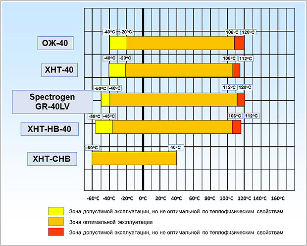

каталог антифризов
Антифризы для автомобилей марки Spektrogen
Для замены широкоиспользуемых в автомобильных двигателях Тосолов компанией Спектропласт были разработаны инновационные антифризы для автомобилей и автотранспорта, выпускаемые под маркой Spektrogen. Антифризы для автомобилей Spektrogen имеют конкурентные преимущества перед современными аналогичными антифризами, благодаря добавляемым в них специальным присадкам, снижающих взякость антифриза, повышающих коррозионную стойкость и энергоэффективность системы.
Антифризы и ингибиторы коррозии, производимые компанией Спектропласт, эксплуатируются более чем на 500 промышленных предприятиях, в том числе: завод Очаково, Heineken, Данфосс, аэропорт Остафьево, бизнес центр Аврора и мн.др.
Преимущества антифриза Spektrogen перед другими:
-
Энергоэффективность
В антифризе Spektrogen серии LV используется инновационная технология снижения вязкости, благодаря чему до 20% уменьшается инерционность системы в процессе разогрева при отрицательных температурах, повышается эффективность теплопередачи, снижается нагрузка на насосы, что способствует экономии электроэнергии.
-
Низкая вязкость
Антифризы серии LV имеют низкую вязкость за счет введения запатентованных присадок на основе
поверхностно-активных веществ. -
Высокая надежность
Антифризы Spektrogen изготавливаются с добавлением комплекса присадок, обеспечивающих защиту системы от перегрева, коррозии и кавитации, предотвращают образование накипных отложений в системе, не вызывают набухания и растворения резиновых и паронитовых уплотнителей, соответствуют
санитарно-эпидемиологи-ческим стандартам. -
Пожаровзрывобезопасность
Антифризы Spektrogen является не горючим и взрывобезопасным веществом. Согласно ГОСТ
12.1.00 7–76 относится к3-му классу опасности (умеренно опасные вещества).
Сравнение характеристик антифризов
| Основа антифриза | Этиленгликоль | Пропиленгликоль |
|---|---|---|
|
Базовые марки Срок эксплуатации 5-7 лет |
Spektrogen OG-30 Spektrogen OG-40 Spektrogen OG-65 | Spektrogen S-30 Spektrogen S-40 Spektrogen S-65 |
|
Энергосберегающие антифризы Срок эксплуатации 5-7 лет |
Spektrogen GR-30LV Spektrogen GR-40LV Spektrogen GR-65LV | Spektrogen S-30LV Spektrogen S-40LV Spektrogen S-65LV |
|
Антифризы для промышленных систем Срок эксплуатации более 15 лет |
ХНТ-30 ХНТ-40 ХНТ-65 | |
|
Энергосберегающие антифризы для промышленных систем Срок эксплуатации более 15 лет |
ХНТ-НВ-30 ХНТ-НВ-40 ХНТ-НВ-60 | |
|
Антифризы для электродных (электролизных) котлов Срок эксплуатации 5-7 лет |
ХНТ-35 |
Температурные диапазоны эксплуатации автомобильных антифризов

Упаковка антифриза Spektrogen:
пластиковые канистры 25 кг, металлические бочки 220 кг или налив.
При заказе от 15 тонн доставка по Московской области бесплатно.
Для региональных дилеров предоставляются специальные финансовые условия.